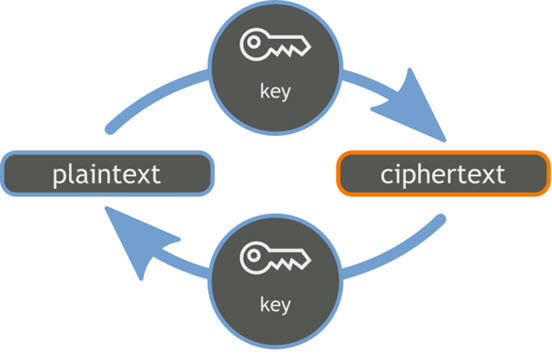

What are SSH Keys and why to use them?

SSH keys serve as a means of identifying yourself to an SSH server using public-key cryptography and challenge-response authentication.
One immediate advantage this method has over traditional password authentication is that you can be authenticated by the server without ever having to send your password over the network. Anyone eavesdropping on your connection will not be able to intercept and crack your password because it is never actually transmitted. Additionally, using SSH keys for authentication virtually eliminates the risk posed by brute-force password attacks by drastically reducing the chances of the attacker correctly guessing the proper credentials.
As well as offering additional security, SSH key authentication can be more convenient than the more traditional password authentication. When used with a program known as an SSH agent, SSH keys can allow you to connect to a server, or multiple servers, without having to remember or enter your password for each system.
If still, SSH keys seem to be unclear to you, don't worry. We will cover this in Hello World" way, but now, sometime later.
Let's focus on setting up SSH key and able to connect to github server.
Generating a new SSH key
- Open Git Bash.
- Paste the text below, substituting
"your_email@example.com"your GitHub email address. - Press Enter, when you're prompted to "Enter a file in which to save the key". This accepts the default file location.
- At the prompt, type a secure passphrase.
$ ssh-keygen -t rsa -b 4096 -C "your_email@example.com" # Creates a new ssh key, using the provided email as a label Generating public/private rsa key pair.
Enter a file in which to save the key (/Users/you/.ssh/id_rsa): [Press enter]
Enter passphrase (empty for no passphrase): [Type a passphrase] Enter same passphrase again: [Type passphrase again]
Adding your SSH key to the ssh-agent
- Ensure
ssh-agentis enabled: - Use
ssh-addto add your SSH key to thessh-agent
# start the ssh-agent in the background $ eval "$(ssh-agent -s)" Agent pid 59566
$ ssh-add ~/.ssh/id_rsa
Add the SSH key to your GitHub account.
To configure your GitHub account to use your new (or existing) SSH key, you'll also need to add it to your GitHub account.
- Copy the SSH key to your clipboard.
- Login to
Githubwith your github account. - Click on your
profile photoand thenSettingsas below. - Click on
SSH and GPG keys(Under left menu). - Click on
New SSH Key(On the right). - Provide suitable
Title, paste your new SSH Key (which is already copied to clipboard) and then click onAdd SSH Key(bottom). - Provide password (which was used to generate SSH key), if prompted.
- If you have reached to this step, it means you have generated new SSH key using git bash and added to your github account successfully.
$ clip < ~/.ssh/id_rsa.pub # Copies the contents of the id_rsa.pub file to your clipboard